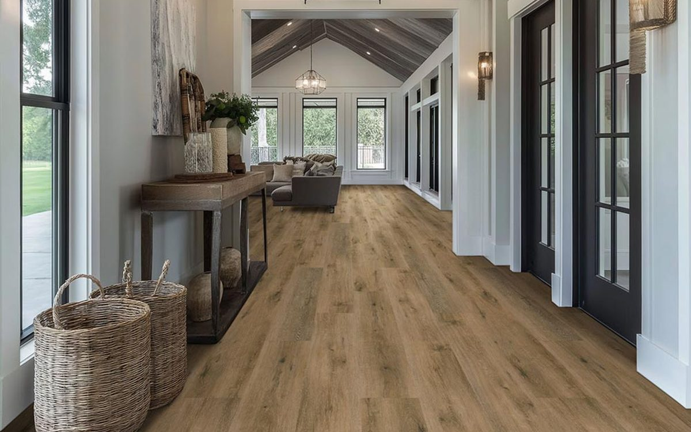
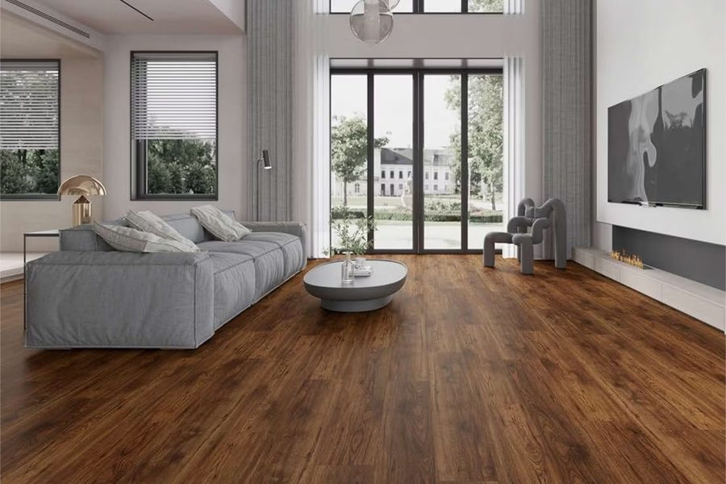

Wood looks. Waterproof toughness.
| Made of | Layered vinyl with a waterproof core |
|---|---|
| Water | Waterproof |
| Durability | Scratch- and dent-resistant |
| Refinishable | No |
| Typical cost level | $$ |
Luxury vinyl plank (LVP) captures the look and texture of real hardwood in a floor that is waterproof and built for busy homes. It resists scratches and dents and is easy to keep clean, which is why it has become one of the most popular choices for whole-home flooring.


| Luxury Vinyl Plank | Luxury Vinyl Tile | |
|---|---|---|
| Looks like | Real hardwood planks | Stone, ceramic, or concrete tiles |
| Shape | Long, narrow planks | Square or rectangular tiles |
| Waterproof | Yes | Yes |
| Best in | Living areas, bedrooms, hallways, basements | Kitchens, bathrooms, laundry rooms, entryways |
| Style | Warm and traditional | Clean, modern, tile-like |
Both are built the same way. It comes down to the look you want in the room.
Most LVP is a click-together floating floor, though some products are glued down. Subfloor prep matters, because bumps and dips can show through the vinyl.
Sweep or vacuum regularly and mop with a pH-neutral cleaner made for vinyl. Avoid wax, polish, and steam mops. Use felt pads under furniture and mats at entryways.
The planks themselves are waterproof and will not swell or warp. Standing water can still reach seams and the subfloor, so wipe up spills promptly.
The subfloor needs to be clean, dry, and reasonably flat. Prep matters for a lasting result, and we check it at your estimate.
Modern LVP uses high-resolution wood images and textured surfaces, so it looks remarkably close to the real thing at a glance.
Call or email to talk through your project and get a quote.